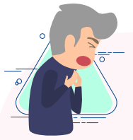
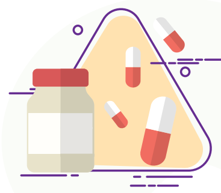

<html>

<head>
    <link rel="stylesheet" href="style.css">
    <title>Infográfico Covid-19</title>
</head>

<body>
    <div id="cabecalho">
        
        <h2>Previna-se contra o novo</h2>
        <h1>Coronavírus</h1>
    </div>
    <div id="conteudo">
        <p>Atualizado em 09/04/2020</p>
        <div class="txtRight spaceBot" id="txtGreenLight">
            <h1>O que são coronavírus?</h1>
            
            <p>Os Coronavírus são uma grande família de vírus, já
                em circulação no Brasil, <span>causadores de resfriados
                comuns, além de outras doenças mais graves
                como a Síndrome Aguda Respiratória Severa
                (SARS) e a Síndrome Respiratória do Oriente
                Médio (MERS)</span>, que causaram epidemias nos anos
                de 2004 e 2012, respectivamente. O novo
                Coronavírus foi denominado pela Organização
                Mundial da Saúde (OMS) como SARS-CoV2
                e a doença, por ele causada, COVID-19.
            </p>
        </div>
        <div class="txtLeft spaceBot" id="txtBackPurpleLight">
            <h1>Como é transmitida a doença?</h1>
            
            <p><span>O principal meio de transmissão é entre
                    pessoas, ou seja, ao tossir ou espirrar,
                    pessoas infectadas expelem gotículas que
                    contém o vírus</span>. Essas gotículas podem
                contaminar superfícies e objetos. Outras
                pessoas podem se infectar ao tocar nesses
                locais contaminados, levando suas mãos aos
                olhos, nariz ou boca.
            </p>
        </div>
        <div class="txtRight spaceBot" id="txtGreenLight">
            <h1>Quais são os sintomas da COVID-19</h1>
            
            <p> <span>Os sintomas são principalmente
                respiratórios, como tosse, coriza,
                dor de garganta, além de febre,
                podendo, nos casos mais graves,
                apresentar falta de ar</span>. Na maioria dos
                casos, os pacientes apresentam
                sintomas leves ou moderados, mas há
                casos graves e até fatais. Os mais
                vulneráveis são pessoas idosas (acima
                de 60 anos) ou com doenças
                pré-existentes.
            </p>
        </div>

        
        <div id="columns" class="spaceBot textoLeftDif">
            <h1>O que posso fazer
                para me proteger da doença?
            </h1>
            <div id="row1">
                <div class="item">
                    
                    <p>Higienizar as mãos com frequência, com solução alcoólica ou com água e sabão, especialmente depois de tossir ou espirrar.</p>
                </div>
                <div class="item">
                    
                    <p>Cobrir o nariz e a boca, antes de tossir ou espirrar, com lenço descartável ou com o antebraço.</p>
                </div>
                <div class="item">
                    
                    <p>Evitar contato direto com pessoas que apresentem sinais de infecção respiratória.</p>
                </div>
            </div>
            <div id="row2">
                <div class="item">
                    
                    <p>Não compartilhar
                        utensílios pessoais
                        como copos e talheres.
                    </p>
                </div>
                <div class="item">
                    
                    <p>Evitar tocar nos
                        olhos, nariz e boca.
                    </p>
                </div>
                <div class="item">
                    
                    <p>Evitar lugares 
                        fechados e com
                        muitas pessoas.
                </div>
            </div>
        </div>

        <div class="txtRight spaceBot">
            <h1>Se eu ficar próximo a uma
                pessoa infectada pelo vírus, em
                quanto tempo também posso
                ficar contaminado?
            </h1>
            
            <p>
                Não há consenso, porém os especialistas entendem que quanto
                mais tempo em contato próximo, maior o risco de transmissão.
            </p>
        </div>

        <div class="txtLeft spaceBot" id="txtGreenLightLight">
            <h1>E se eu cruzar com uma pessoa
                doente, também ficarei doente?
            </h1>
            <p>
                Os especialistas concordam que ainda têm muito a aprender sobre este ponto,
                mas quatro fatores provavelmente desempenham algum papel nessa questão:
                quão perto você está; quanto tempo você está perto da pessoa; se essa pessoa
                projeta gotículas virais em você; e quanto você toca seu rosto. Obviamente,
                sua idade e saúde também são fatores importantes.
                <span>Mantenha-se atento às medidas de prevenção verificadas no tópico
                anterior e lembre-se de evitar aglomerações e ambientes fechados,
                além de fazer uso frequente do álcool gel ao tocar superfícies.</span>
            </p>
        </div>

        <div class="txtRight spaceBot" id="txtGreen">
            <h1>O que é a
                transmissão por
                gotícula?
            </h1>
            
            <p>
                <span>É uma gota contendo partículas virais. Um vírus "nu" não
                pode ir a lugar algum, a menos que esteja pegando carona
                com uma gota de muco ou saliva.</span> Essas gotículas de muco e
                saliva saem da boca ou do nariz enquanto tossimos, espirramos,
                rimos, cantamos, respiramos e conversamos. Se elas não
                atingem algo ao longo do caminho, normalmente caem no chão.
                Para ter acesso às células, as gotículas virais devem entrar pelos
                olhos, nariz ou boca. Alguns especialistas acreditam que espirros
                e tosse são provavelmente as principais formas de transmissão.
                Conversar a menos de 2 m ou compartilhar uma refeição com
                alguém pode representar um risco.
            </p>
        </div>

        <div class="txtLeft spaceBot" id="backBlueLight">
            <br>
            
            <h1>Quão perto é
                muito perto?
            </h1>
            <p>
                O seguro é car a, pelo menos,
                2 metros de uma pessoa doente.
            </p>
        </div>

        <div class="txtRight spaceBot" id="txtPurple">
            <h1>O vírus pode permanecer em um
                assento de ônibus, em uma tela
                sensível ao toque, maçaneta ou
                outra superfície?
            </h1>
            
            <p>
                <span>Sim, por isso a recomendação é sempre
                higienizar as mãos após tocar em superfícies
                potencialmente contaminadas.</span> As gotículas não
                penetram na pele, mas se você tocar mucosas,
                rosto, olhos e nariz com as mãos sujas ou
                contaminadas, poderá haver contágio.
            </p>
        </div>

        <div class="txtLeft spaceBot" id="txtYellow">
            <h1>
                Os animais domésticos
                podem transmitir a
                COVID-19?
            </h1>
            
            <p>
                <span>Não.</span> De acordo com informação da Organização
                Mundial da Saúde (OMS), não há evidência de que
                os animais domésticos, tais como cães e gatos,
                tenham sido infetados e que, consequentemente,
                possam transmitir a COVID-19.
            </p>
        </div>

        <div class="txtRight spaceBot" id="txtBackPurpleLight">
            <h1>
                O calor ajuda a
                evitar a COVID-19?
            </h1>
            
            <p>
                <span>O calor diminui aglomerações e faz com que as
                pessoas tendam a ficar menos em ambientes
                muito fechados, que é um fator de propagação da
                doença.</span> Não se conhece ainda, contudo, com precisão,
                o impacto da temperatura para este vírus
                especicamente, portanto, as recomendações
                independem do clima ambiente.
            </p>
        </div>

        <div class="txtLeft spaceBot" id="txtYellow">
            <h1>
                Existe exame para
                o diagnóstico do
                novo Coronavírus?
            </h1>
            
            <p>
                <span>Sim, há um exame realizado através de coleta
                swab (com cotonete estéril) de nasofaringe
                para detecção do novo Coronavírus.</span> Tem-se
                priorizado a sua realização para pacientes graves,
                que requeiram internação hospitalar. Pacientes com
                suspeita ou conrmação diagnóstica de COVID-19,
                mas com sintomas leves e sem sinais de gravidade,
                devem permanecer em casa, em isolamento
                domiciliar e ter orientações quanto aos principais
                sinais de complicações, como falta de ar ou queda
                do estado geral. Caso necessário sair de casa para
                buscar ajuda médica, deverão usar máscara
                simples. A conrmação do diagnóstico pelo exame
                não altera o tratamento neste momento.
            </p>
        </div>

        <div class="txtRight spaceBot" id="txtGreenLight">
            
            <h1>
                Existe vacina
                contra os Coronavírus?
            </h1>
            <p>
                <span>Atualmente não existem vacinas
                contra nenhum dos Coronavírus
                circulantes, incluindo o SARS-COV2.</span>
            </p>
        </div>

        <div class="txtRight spaceBot" id="backPurple">
            
            <br>
            <h1>
                Estou sem sintomas, mas viajei
                para áreas de risco ou tive
                contato com pessoas com
                suspeita ou confirmação de
                Coronavírus, o que devo fazer?
            </h1>
            <p>
                Pacientes que não apresentam
                sintomas não precisam realizar
                exames, e devem permanecer atentos
                para ocorrência de febre e sintomas
                respiratórios – o médico deve ser
                procurado nesses casos.
            </p>
        </div>

        <div class="txtLeft spaceBot" id="backYellow">
            <br>
            <h1>
                Pessoas assintomáticas
                transmitem o vírus também?
            </h1>
            <p>
                Pessoas infectadas com o novo Coronavírus costumam exibir sintomas
                entre 4 e 5 dias após a contaminação, mas os sintomas podem variar entre
                1 e 14 dias para aparecer. Durante o período assintomático estima-se que
                possa haver transmissão (em menor escala), mas não se conhece resposta
                denitiva para esta questão até o momento.
            </p>
        </div>

        <div class="txtRight spaceBot" id="txtYellow">
            <h1>
                Há tratamento
                específico para o
                novo Coronavírus?
            </h1>
            
            <p>
                <span>Não há tratamento específico para o novo
                Coronavírus.</span> O tratamento do paciente com
                suspeita ou infecção conrmada é baseado
                no controle de sintomas, e tem como objetivo
                dar suporte clínico ao paciente. Consulte o
                médico para orientações quanto às
                medicações necessárias.
            </p>
        </div>

        <div class="txtLeft spaceBot" id="txtYellow">
            <h1>
                O isolamento é indicado
                para casos suspeitos
                ou confirmados?
            </h1>
            
            <p>
                <span>Sim, devem permanecer em isolamento (de contato
                ou respiratório) todos os pacientes com suspeita
                ou confirmação de infecção pelo novo Coronavírus,
                tanto no hospital quanto em casa, pelo tempo
                recomendado pelo médico, e com
                acompanhamento regular.</span> O isolamento pode ser
                mantido por até 14 dias, podendo ser reduzido ou
                estendido conforme orientação médica. Casos
                suspeitos que foram laboratorialmente descartados
                podem ser retirados do isolamento para a COVID-19.
                Vale lembrar que síndromes gripais causadas por
                outros agentes também requerem cuidados com a
                transmissão e não dispensam a higienização das mãos.
            </p>
        </div>

        <div class="txtRight spaceBot" id="txtYellow">
            <h1>
                Necessito usar máscara
                facial se estiver em público?
            </h1>
            
            <p><span>Não está indicado o uso de máscara
                para proteção individual, exceto nas
                seguintes situações:</span></p>
            <ul>
                <li>
                    Pessoas com sintomas de infecção
                    respiratória (tosse ou espirro);
                </li>
                <li>
                    Suspeitos ou portadores de infecção
                    confirmada de COVID-19.
                </li>
            </ul>
        </div>

        <div class="txtLeft spaceBot" id="backPurpleLight">
            <br>
            <h1>
                Caso eu tenha indicação médica de
                isolamento domiciliar por diagnóstico
                de COVID-19, quais cuidados devo ter?
            </h1>
            <ul>
                <li>Realizar higiene das mãos frequentemente utilizando álcool gel (caso as mãos
                    não estejam com sujeira evidente) ou com água e sabão (caso haja sujeira evidente).</li>
                <li>Manter distância de, pelo menos, 2 metros de pessoas sem sintomas.</li>
                <li>Utilizar máscara cirúrgica comum a maior parte do tempo. Se estiver sem a máscara,
                    cobrir a boca e o nariz com um lenço descartável ao tossir ou espirrar. Limpar as
                    mãos imediatamente após tossir ou espirrar.</li>
                <li>Manter as janelas do ambiente em que estiver abertas o maior tempo possível.</li>
            </ul>
        </div>

        <div class="txtRight spaceBot">
            <h1>
                Quais são os cuidados que pessoas
                que vivem no mesmo domicílio de
                paciente com indicação médica de
                isolamento por diagnóstico de
                COVID-19 devem ter?
            </h1>
            
            <ul>
                <li><span>Realizar também a lavagem de mãos de maneira frequente,
                    com água e sabão ou álcool gel.</span></li>
                <li>Manter distância de, pelo menos, 2 metros do paciente.</li>
                <li>Vestir uma máscara cirúrgica simples quando
                    estiver no mesmo ambiente que o paciente.</li>
                <li> Manter as janelas do domicílio abertas o maior tempo possível.</li>
            </ul>
        </div>

        <div class="txtLeft spaceBot" id="backGreenLight">
            <br>
            <h1>
                Qual a orientação para quem tem casos
                confirmados em casa? Não devemos
                permitir que os filhos frequentem a
                escola, mesmo que assintomáticos ou
                devemos nos afastar do trabalho?
            </h1>
            <p>
                <span>O Governo do Estado de São Paulo e de outros estados do país decretaram a
                suspensão das aulas temporariamente pensando em reduzir o número de
                pessoas em circulação.</span> Não há orientação formal até o momento do Ministério da
                Saúde, mas recomenda-se que pessoas que têm contato com indivíduos com COVID-19
                permaneçam em casa em cuidados de isolamento domiciliar e que sigam as
                recomendações do tópico anterior para evitar contágio de outras pessoas no ambiente.
                Se possível, trabalhar em home oce. Sempre car atento ao surgimento de sintomas
                gripais, febre ou ainda desconforto respiratório. Deve-se procurar avaliação médica
                nestes casos. Se você tiver máscara simples disponível, ao se locomover para esta
                nalidade, utilize-a.
            </p>
        </div>

        <div class="txtRight spaceBot" id="txtYellow">
            <h1>A vacina da gripe diminui o risco
                de infecção pelo Coronavírus?
            </h1>
            
            <p>
                <span>Não, </span>a vacina da gripe ajuda o organismo a criar
                imunidade contra infecções por vírus influenza, mas
                não confere imunidade contra o novo Coronavírus.
            </p>
        </div>

        <div class="txtLeft spaceBot" id="txtYellow">
            <h1>
                Há algo para melhorar o sistema
                imunológico especificamente para
                combater a infecção pelo Coronavírus?
            </h1>
            
            <p>
                <span>Não, </span>siga as recomendações para um vida saudável e evite
                transmissão com as orientações anteriormente citadas.
            </p>
        </div>
    </div>
</body>

</html>